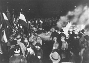

Adolf Hitler

Pálení nepohodlných knih nacisty
|
NĚMECKO A RAKOUSKO
Německo toužilo ovládnout svět, ale obě války, které rozpoutalo, skončily jeho porážkou. Špatně skončil i jeho spojenec – Rakousko-Uhersko se po 1. světové válce rozpadlo a po 2. světové válce bylo dlouho rozděleno mezi vítězné mocnosti. Protože bylo české i slovenské území jeho součástí až do roku 1918, řada rakouských spisovatelů pocházela z Čech. Pokud psali německy, považují se spíše za Rakušany (Kraus...). Jestliže psali česky, řadíme je do české literatury. I v době meziválečné ale žila v Československu významná německy mluvící menšina (Kafka, Brod, Werfel, Rilke...) a navíc k nám proudili emigranti z nacistického Německa. Hitlerův režim totiž pronásledoval Židy, levicové intelektuály nebo odpůrce fašismu. Zvedla se také vlna odporu proti modernímu a avantgardnímu umění, které bylo označeno jako entartete Kunst (zvrhlé umění). Oficiální propagandistická tvorba měla nejblíže k pokleslému realismu až kýči. Náměty byly militaristické, protižidovské nebo rasistické. Zneužit byl film hraný i kreslený, výtvarné umění nebo literatura.

Sjezd NSDAP
|
Historie
Ke sjednocení Německa došlo až roku 1871, takže jeho mezinárodní vliv byl minimální. Císař Vilém II. (1859-1941) měl hlavní podíl na rozpoutání 1. sv. války. S Rakouskem-Uherskem a Itálií založil roku 1882 vojenský pakt Trojspolek a připravoval vpád do Francie. Po porážce v roce 1918 přišlo Německo o řadu území a Rakousko-Uhersko se rozpadlo na nástupnické státy – Rakousko, Maďarsko, Československo, Jugoslávie. Německo se ocitlo v hluboké hospodářské krizi, narůstal zde nacionalismus a touha pomstít se Francouzům. Roku 1933 se dostali k moci nacisté včele s Adolfem Hitlerem (1889-1945), který zavedl diktátorský režim založený na rasismu a militarismu. Roku 1938 zabralo Německo Rakousko a Sudety, následujícího roku byl zřízen protektorát Čechy a Morava. Napadením Polska v roce 1939 rozpoutal Hitler 2. sv. válku.
Jaký je tvůj názor na Hitlera?
Co si myslíš o neonacistech?
Jaký je tvůj názor na umělce, kteří podporovali nacismus?
|
Erich Maria Remarque
(1898-1970)
Erich Paul Remark nastoupil na frontu jako dobrovolník. Byl raněn a po demobilizaci prošel řadou povolání. Cestoval po Evropě a počátkem 30. let se usadil ve Švýcarsku. Když se v Německu chopili moci nacisté, začali veřejně pálit jeho knihy. 2. sv. válku strávil v USA. Napsal romány Na západní frontě klid, Cesta zpátky, Tři kamarádi, Vítězný oblouk, Jiskra života, Čas žít, čas umírat, Černý obelisk, Miluj bližního svého, Nebe nezná vyvolených nebo Noc v Lisabonu.
|
Erich Maria Remarque: Na západní frontě klid
Protiválečný román Na západní frontě klid je podle autorových slov „pokusem podat zprávu o generaci, která byla zničena válkou – i když unikla jejím granátům“. Vypravěč Pavel Bäumer i jeho spolužáci z gymnázia nastoupili díky agitaci svého profesora na frontu jako dobrovolníci. Po krátkém výcviku plném šikanování jsou nepřipravení mladíci posláni do války a postupně v ní umírají.
|

Srovnej obě ukázky z románu Na západní frontě klid.
|
Thomas Mann (1875-1955)
Thomas Mann původně sympatizoval s německými nacionalisty, ale brzy prohlédl a začal vystupovat proti nacismu. Proto musel roku 1933 emigrovat do Švýcarska. O tři roky později byl zbaven německého občanství, ale získal občanství československé s domovským právem v Proseči. Roku 1938 utekl do USA. Po válce se opět usadil ve Švýcarsku. Je autorem románů Buddenbrookovi, Smrt v Benátkách, Kouzelný vrch, Mario a kouzelník, Josef a bratří jeho, Doktor Faustus nebo Zpověď hochštaplera Felixe Krulla.
Roku 1929 získal Nobelovu cenu za literaturu.
|
Thomas Mann: Doktor Faustus
Román Doktor Faustus je vyprávěním o životě fiktivního hudebního skladatele Adriana Leverkühna, který se upíše ďáblu, aby mohl vytvořit velká novátorská díla. Podmínkou je, že se nesmí zamilovat. Osamělý hudebník skládá atonální a disharmonické opusy, které popírají dosavadní vývoj hudby, a po uplynutí stanovené lhůty propadá Leverkühn šílenství. Dějový rámec románu tvoří poslední dva roky 2. světové války.
Román vyšel roku 1947, navazuje na něj Mannova kniha Jak jsem psal Doktora Fausta.
|
Bratři Mannové
Jaký byl Adrian Leverkühn?
|
Heinrich Mann (1871-1950)
Heinrich Mann měl podobný osud jako jeho bratr Thomas. Uprchl před Hitlerovým režimem do Francie a získal československé občanství. Roku 1940 odešel do USA, kde zemřel. Napsal romány Profesor Neřád, Mládí krále Jindřicha IV., Zrání krále Jindřicha IV. nebo trilogii Císařství (Poddaný, Chudí, Hlava).
|
Heinrich Mann: Profesor Neřád
Román Profesor Neřád odhaluje falešnou morálku a společenskou přetvářku. Hlavní postavou je despotický profesor klasických jazyků Raat, kterého všichni přezdívají Neřád. Při slídění po mravnostních poklescích svých studentů narazí na pochybný hostinec Modrý anděl a podlehne kouzlu zdejší zpěvačky Fröhlichové. Oddá se prostopášnému životu, ožení se s ní a jejich dům se stane semeništěm hříchu a hazardních her. Přítrž orgiím učiní až policie, kterou povolá Neřádův žák a jeho úhlavní nepřítel Lohman.
|

George Grosz: Muž a žena
Srovnej způsob Neřádova vyjadřování s ostatními postavami.
|
Lion Feuchtwanger
(1884-1958)
Feuchtwanger [fojchtvangr] pocházel z židovské rodiny a zapojil se do antifašistického hnutí. Roku 1933 musel odejít z Německa. Pobýval ve Francii, odkud v roce 1940 emigroval do USA. Těžištěm jeho tvorby byly romány historické – Ošklivá vévodkyně, Nepravý Nero, Josephus Flavius, Lišky na vinici, Židovka z Toleda a životopisné – Bláznova moudrost (o filozofu Rousseauovi), Goya. Drama a pozdější román Žid Süss zneužila nacistická propaganda ve stejnojmenném filmu. Otevřeně protifašistická je jeho románová trilogie Čekárna (Úspěch, Oppermannové, Vyhnanství).
Kdo byl Josephus Flavius?
Co víš o Neronovi, Rousseauovi a Goyovi?
|
Lion Feuchtwanger: Žid Süss
Historický román Žid Süss se odehrává ve 30. letech 18. století. Titulní postavou je obratný finančník Josef Süss Oppenheimer, který podporuje chudého prince Karla Alexandra. Když se princ neočekávaně stane vévodou württemberským, stává se Süss správcem jeho financí a bezohledně ždímá poddané. Princ se ale pokusí znásilnit jeho dceru a Süss se od něho odvrací. Překazí jeho pokus o státní převrat a po princově smrti se dobrovolně vydává do rukou spravedlnosti. Odmítá konvertovat na katolickou víru a umírá jako mučedník, přestože ho židovská obec dříve vnímala jako odrodilce.
Románem se prolíná líčení těžkého osudu židovského obyvatelstva a líčení různých předsudků vůči židům.
|

Co nového ses dozvěděl/a z ukázky?
Jaký byl osud Židů od středověku do poloviny 20. století?
Co se traduje o Židech?
Říká se něco podobného také o Češích? Je to pravda?
Co víš o židovském náboženství?
Jaký je rozdíl mezi židem, Židem, kabalistou, sionistou a judaistou?
|
Robert Musil (1880-1942)

Rakouský spisovatel Robert Musil strávil mládí v Hranicích na Moravě a v Brně. Roku 1938 emigroval do Švýcarska. Napsal expresionistický román Zmatky chovance Törlesse. Rozsáhlý třídílný román Muž bez vlastností již nestihl dokončit.
|
Robert Musil: Muž bez vlastností
Děj románového torza Muž bez vlastností se odehrává v habsburské monarchii, kterou autor nazývá Kakánie (podle zkratky k.k., tj. císařsko-královský). Hlavní postavou je matematik Ulrich, který se zamiluje do své sestry Agáty. Za „muže bez vlastností“ je považován pro svou pasivitu a ironický odstup od okolního světa. Román měl končit vypuknutím 1. světové války.
Další díla
Karl Kraus: Poslední dnové lidstva
Arnold Zweig: Velká válka bílých mužů, Hra o seržanta Gríšu
Stefan Zweig: Řetěz, Triumf a tragika Erasma Rotterdamského, Balzac
Hermann Hesse: Stepní vlk, Siddhártha
Alfred Kubin: Země snivců
|

George Grosz: Opory společnosti
Charakterizuj Ulricha a Agátu.
Ferdinand Hodler: Thunské jezero
|
Internetové stránky
Entartete Kunst
Entartete Kunst
Entartete Kunst
Nacistické umění
Nacistické umění
Grosz, malíř
Remarque
Remarque
Remarque
Bratři Mannové
Thomas Mann
Kučera: Doktor Faustus, článek
Feuchtwanger
Musil
Musil
Kučera: Poslední dny lidstva, článek
Blumfeld: Hermann Hesse, článek
Hitler
|
Doporučená četba
Berghahn, Wilfried: Musil, přel. V.Tuckerová, Votobia, Olomouc 1996
Feuchtwanger, Lion: Žid Süss, přel. B.Rovenský, Odeon, Praha 1969
Fischer, Ernst: Kafka, Musil, Kraus, Praha 1965
Kafka, Vladimír: Studie a úvahy o německé literatuře, Kra, Praha 1995
Kupka, František: Exulant Thomas Mann, Východočeské nakladatelství, Hradec Králové 1966
Mann, Heinrich: V zemi hojnosti, Profesor Neřád, přel. Feldstein, Vobrubová-Koutecká, SNKLHU, Praha 1954
Mann, Thomas: Doktor Faustus, přel. H.Karlach, Mladá fronta, Praha 1986
Mann, T.: Mario a kouzelník a jiné novely, přel. J.Fučíková, Melantrich, Praha 1932
Musil, Robert: Muž bez vlastností, přel. A.Siebenscheinová, Argo, Praha 1998
Musil, R.: Povídky, Pozůstalost za života, přel. A.Siebenscheinová, Odeon, Praha 2000
Remarque, Erich Maria: Na západní frontě klid, Cesta zpátky, přel. F.Gel, Odeon, Praha 1973
Zweig, Stefan: Svět včerejška, přel. E.Červinková, Torst, Praha 1994
|
Vypracuj písemný referát o některé z uvedených knih.
Filmy
Modrý anděl, režie J. von Sternberg (Profesor Neřád)
Diktátor, režie Ch.Chaplin
Triumf vůle, režie L.Riefenstahlová
Exkurze
Lübeck
|
|